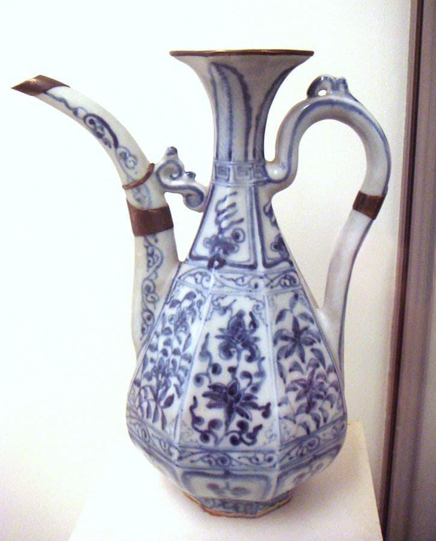

En palabras de Theodor Benfey, la tabla y la ley periódica «son el corazón de la química —comparables a la teoría de la evolución en biología (que sucedió al concepto de la scala naturae), y a los principios de termodinámica en la física clásica—»
+ Las filas de la tabla se denominan períodos y las columnas grupos .4 Algunos grupos tienen nombres, así por ejemplo el grupo 17 es el de los halógenos y el grupo 18 el de los gases nobles.
El cobalto (del alemán kobalt, voz derivada de kobolds, los "Duendes" que, según los mineros de Sajonia de la Edad Media, eran espíritus de la tierra que tenían embrujado el mineral, por lo que, aunque parecía mena de cobre, no producía este elemento con el tratamiento habitual
Los compuestos de cobalto se han utilizado durante siglos para obtener un color azul intenso de vidrio, los esmaltes y cerámicas. Se ha detectado cobalto en esculturas egipcias y en joyas persas desde el tercer milenio a. C., en las ruinas de Pompeya (destruida en el año 79 d. C.), y en China, en la dinastía Tang (618-907 d. C.) y la dinastía Ming (1368-1644 d. C.)
El cobre es uno de los pocos materiales que no se degradan ni pierden sus propiedades químicas o físicas en el proceso de reciclaje.41 Puede ser reciclado un número ilimitado de veces sin perder sus propiedades, siendo imposible distinguir si un objeto de cobre está hecho de fuentes primarias o recicladas. Esto hace que el cobre haya sido, desde la Antigüedad, uno de los materiales más reciclados.
Es un metal maleable, de color gris plateado, y presenta propiedades magnéticas (es ferromagnético a temperatura ambiente y presión atmosférica). Es extremadamente duro y denso.
Se encuentra en la naturaleza formando parte de numerosos minerales, entre ellos muchos óxidos, y raramente se encuentra libre. Para obtener hierro en estado elemental, los óxidos se reducen con carbono y luego es sometido a un proceso de refinado para eliminar las impurezas presentes.